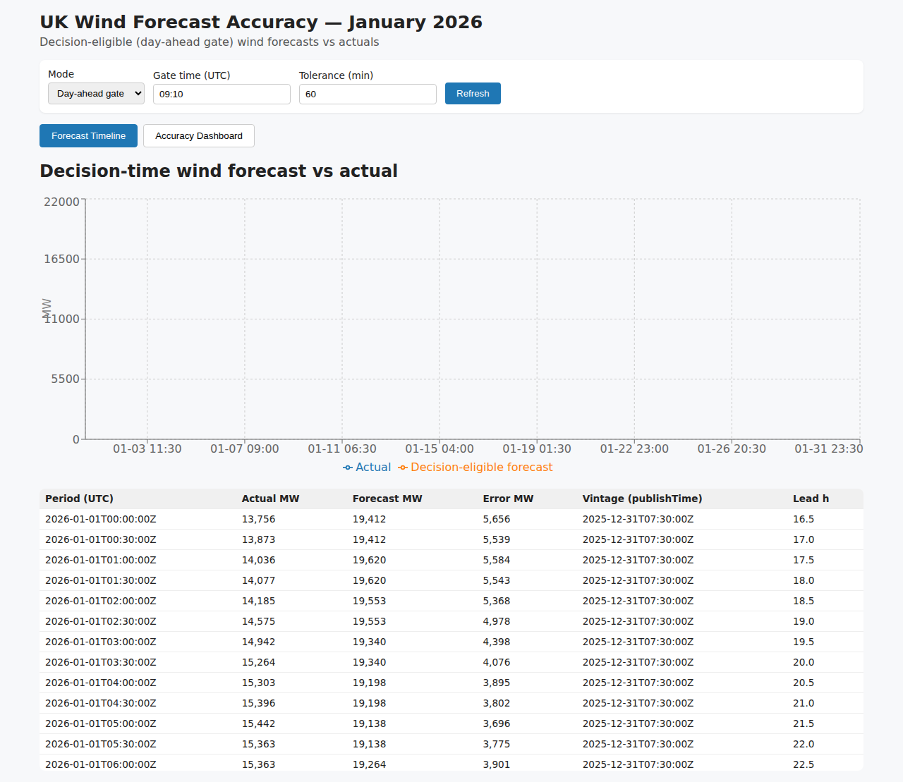
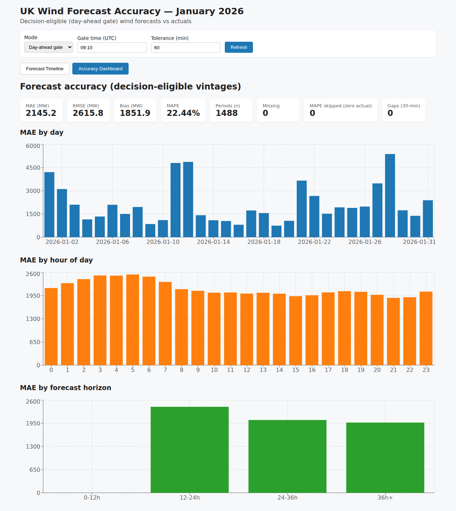

Day-ahead decisions on January 2026 wind

Procure thermal power beyond expected wind; wind is weather-dependent.
FUELHH actuals (30-min) + WINDFOR forecasts (hourly). National UK wind.
Only forecasts that existed at the gate count (prev day 09:10 UTC).
Actual vs decision-eligible forecast; vintage + lead time per period.
MAE 2,145 MW; RMSE 2,616 MW; bias +1,852 MW; MAPE 22.4%; n=1,488; worst day 28 Jan ~5,375 MW.

Gate time or fixed lead hours; carry-forward tolerance (default 60 min).
Transparent metrics to inform procurement risk.
Never latest-as-of-now; offline cache; env config.
Repo + live URL.
FastAPI + React (Vite), Docker, Vercel; no database.
Fetch → cache → parse → decision_time → vintage → align → metrics.
Latest WINDFOR publishTime ≤ decision_time.
Carry-forward within tolerance; missing handled.
MAE/RMSE/bias/MAPE; zero-actual guard; by day/hour/horizon.
backend/app, frontend/src/views, tests.
pytest 21, tsc, GitHub Actions docker compose.
Vercel frontend/backend; env VITE_API_BASE; cache /tmp.
Missing forecasts, zero actuals, gaps, dedup revisions.
Repo: github.com/RavaniRoshan/girds-wind-forecast. Live: frontend-mu-beige-39.vercel.app